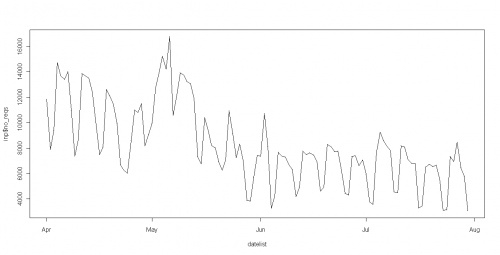

OpenURL Router Data: Total Requests by Date
Originators/Authors
Sheila Fraser
OpenURL, EDINA, University of Edinburgh
Purpose
To display a graph of the OpenURL Router data total requests by date as one example of how the
data can be used
Background
All OpenURL requests made by end users via the Router at openurl.ac.uk are logged, and (subject
to the metadata included by the referring service) provide a record of the article that user was
attempting to find via their local resolver. A subset of the log has recently been released as open
data and this can be analysed in a variety of ways. This example gives the count of the total
number of requests on each date, which shows a weekly usage pattern.
Other related data and visualisations, such as a weekly cycle chart, can be found together with
the scripts to generate them from
http://figshare.com/figures/index.php/Openurl
Ingredients
- OpenURL Router data ( http://openurl.ac.uk/doc/data/data.html )
- R (free software from http://cran.r-project.org/)
Assumptions
- Availability of OpenURL Router data
- Knowledge of how to run Perl scripts on the downloaded file
Warnings
The data is being regularly published, but may be a little out of date following the end of the project.
Individual steps
- Download the OpenURL Router data
- Run the script to pre-process the data
- Run the R script to generate the graph
Intermediate data
|
date
|
no_reqs
|
day
|
|
01/04/11
|
11836
|
Friday
|
|
02/04/11
|
7894
|
Saturday
|
|
03/04/11
|
9399
|
Sunday
|
|
04/04/11
|
14719
|
Monday
|
Appendix A: Sample output

Appendix B: Pre-processing script
#!/usr/local/bin/perl
use strict;
use Data::Dumper;
my $logDir = "../logs/2011_raw/rotated/"; # change to the Level 0 log file name to read from my
$fileName = "2011-08-01_Router.log";
open LOGFILE, $logDir."$fileName" or die "cannot open file for reading\n"; my $line; my %dates;
while (my $line = <LOGFILE>){
chomp($line);
# if it's a request to a resolver then count it in
if($line =~ "redirect.resolver"){
my $dateTime = (split(/\t/,$line))[0];
(my $date, my $time) = split(/T/, $dateTime);
my $hour = (split(/:/, $time))[0];
$dates{"$date"}++;
}
}
# print the counts on the terminal
foreach my $key (sort keys %dates) {
print "$key\t".$dates{$key}."\n";
Appendix C: R script to generate the graph
Using R to generate this example graph, the script is:
filepath <- system.file("ourldata", "no_of_reqs_csv_dates_Apr_Jul.csv", package="datasets")
inp <- read.csv(filepath, header=TRUE)
inp$date <- factor(inp$date)
datelist <- as.Date(inp$date, "%d/%m/%Y")
plot(datelist, inp$no_reqs, pch=".")
lines(datelist, inp$no_reqs)